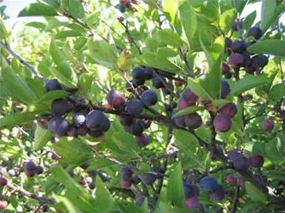

Beach plum
Beach plum is a wild fruit you can forage from August to September in Northeast. Low shrub of coastal dunes with white spring blossom and small purple plums.

When is beach plum in season in the United States?
Beach plum is usually in season August to September. Timing shifts with weather, latitude and altitude.
Where does beach plum grow in the United States?
Beach plum grows in Connecticut, Delaware, District of Columbia, Maine, Maryland, Massachusetts, New Hampshire, New Jersey, New York, Pennsylvania, Rhode Island, Vermont, Virginia, West Virginia. Regions: Northeast.
How do you recognise beach plum?
Low shrub of coastal dunes with white spring blossom and small purple plums.
How do you harvest beach plum?
Pick only fully ripe fruit that comes away easily, into a shallow container so it doesn't crush. Leave plenty on the plant for birds and wildlife.
How do you eat beach plum?
Beach plum jelly, a New England classic.
How do you store beach plum?
Jelly.
What is beach plum good for?
Vitamin C.
What can you cook with beach plum?
- Beach plum jelly: Cape Cod beach plums cooked and strained into jelly.